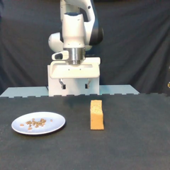

|
Wenshuai Zhao Bio. I am an FCAI-funded postdoctoral researcher in the Department of Computer Science at Aalto University, Finland. I am supervised by Prof. Juho Kannala and Prof. Arno Solin. My PhD research, supervised by Prof. Joni Pajarinen, focused on reinforcement learning, imitation learning, and their applications in robotics and general decision-making. I also had the pleasure of visiting Dr. Michael Muehlebach's group at the Max Planck Institute for Intelligent Systems (MPI-IS) in Tübingen, Germany.Interest. Currently, my research aims to learn useful representations from videos for robotics. Email: wenshuai [dot] zhao [at] aalto [dot] fi |

|
Selected Publications* Equal contribution † Corresponding authorRepresentative papers are highlighted. Please check my Google Scholar for a full list. Diffusion Models Multi-Agent RL Model-based RL World Models WAM VLA Models Imitation Learning Representation Learning Curriculum Learning |


|
Sparsely Supervised Diffusion
Wenshuai Zhao, Zhiyuan Li, Yi Zhao, Mohammad Hassan Vali, Martin Trapp, Joni Pajarinen, Juho Kannala, Arno Solin arXiv, 2026 Diffusion Models website / code / arXiv Diffusion models often produce spatially inconsistent images. We propose sparsely supervised diffusion, a simple, principled method that reduces excessive correlations from limited data without relying on physics or geometry heuristics. It is effective and requires only a few lines of code. |
|
|
Point Tracking Improves World Action Models
Jiarui Guan, Wenshuai Zhao†, Yue Pei, Ziliang Chen, Arno Solin, Juho Kannala RWM Workshop @ RSS, 2026 (Oral) WAMWorld ModelsRepresentation Learning website / code / arXiv We equip existing world-action model (WAM) to predict 2D point tracks with visibility. Point tracks provide an explicit, occlusion-robust representation of motion that captures long-horizon dynamics beyond pixel appearance. |
|
 
|
Post-Training Vision–Language–Action Models to Attend Less
Wenshuai Zhao, Yuying Zhang, Yihao Wang, Juho Kannala, Arno Solin Diff4RL Workshop @ RSS, 2026 VLA ModelsRepresentation Learning website / code / paper We post-train VLA models with a sparse cross-attention module that prunes over 99% of attention edges to vision–language tokens. By restricting the action head to task-relevant tokens, sparse attention acts as a regularizer that improves generalization. |

|
Latent-Compressed Variational Autoencoder for Video Diffusion Models
Jiarui Guan, Wenshuai Zhao†, Zhengtao Zou, Juho Kannala, Arno Solin CVPR Findings, 2026 Diffusion ModelsRepresentation Learning website / code / arXiv We propose a latent compressed VAE to remove the high-frequency components of video latent while offloading the high-frequency reconstruction to the decoder. In this way, the VAE encodes the video into diffusion friendly latent and improves the video generation quality. |

|
Efficient Reinforcement Learning by Guiding World Models with Non-Curated Data
Yi Zhao, Aidan Scannell, Wenshuai Zhao, Yuxin Hou, Tianyu Cui, Le Chen, Dieter Büchler, Arno Solin, Juho Kannala, Joni Pajarinen ICLR, 2026 Model-based RLWorld Models website / code / paper We propose two practical techniques to enable efficient offline-to-online RL using non-curated robot data. |

|
Learning Progress Driven Multi-Agent Curriculum
Wenshuai Zhao, Zhiyuan Li, Joni Pajarinen ICML, 2025 Multi-Agent RLCurriculum Learning website / code / arXiv We show two flaws in existing reward based curriculum learning algorithms when generating number of agents as curriculum in MARL. Instead, we propose a learning progress metric as a new optimization objective which generates curriculum maximizing the learning progress of agents. |

|
Exploiting Local Observations for Robust Robot Learning
Wenshuai Zhao*, Eetu-Aleksi Rantala*, Sahar Salimpour, Zhiyuan Li, Joni Pajarinen, Jorge Pena Queralta arXiv, 2025 Multi-Agent RL code / arXiv We show that in many multi agent systems where agents are weakly coupled, partial observation can still enable near-optimal decision making. Moreover, in a mobile robot manipulator, we show partial observation of agents can improve robustness to agent failure. |

|
AgentMixer: Multi-Agent Correlated Policy Factorization
Zhiyuan Li, Wenshuai Zhao, Lijun Wu, Joni Pajarinen AAAI, 2025 Multi-Agent RL code / arXiv We propose multi-agent correlated policy factorization under CTDE, in order to overcome the asymmetric learning failure when naively distill individual policies from a joint policy. |

|
Bi-Level Motion Imitation for Humanoid Robots
Wenshuai Zhao, Yi Zhao, Joni Pajarinen, Michael Muehlebach CoRL, 2024 Imitation Learning website / code / arXiv We propose a bi-level optimization framework to address the issue of physically infeasible motion data in humanoid imitation learning. The method alternates between optimizing the robot's policy and modifying the reference motions, while using a latent space regularization to preserve the original motion patterns. |

|
Optimistic Multi-Agent Policy Gradient
Wenshuai Zhao, Yi Zhao, Zhiyuan Li, Juho Kannala, Joni Pajarinen ICML, 2024 Multi-Agent RL website / code / arXiv In order to overcome the relative overgeneralization problem in multi agent learning, we propose to enable optimism in multi-agent policy gradient methods by reshaping advantages. |

|
Backpropagation Through Agents
Zhiyuan Li, Wenshuai Zhao, Lijun Wu, Joni Pajarinen AAAI, 2024 Multi-Agent RL code / arXiv We propose to backpropogate the gradients through action chains in auto-regressive based MARL methods. |

|
Simplified Temporal Consistency Reinforcement Learning
Yi Zhao, Wenshuai Zhao, Rinu Boney, Juho Kannala, Joni Pajarinen ICML, 2023 Model-based RL code / arXiv We propose a simple but effective model-based reinforcement learning algorithm relying only on a latent dynamics model trained by latent temporal consistency. |
|
Design and source code from Jon Barron's website |